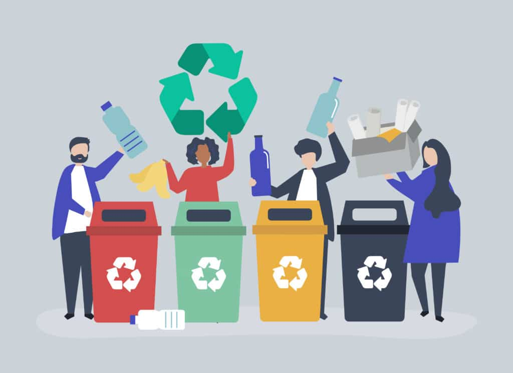

Atention! sur cette page nous allons présenter notre projet d'un point de vue plus technique.
No panic, les explications sont claires
Electronique
Il existe plusieurs sous-systèmes électroniques pour faire fonctionner le système.
sous-système trappes
Le système dispose pour chaque type de déchets d’un bac et une trappe qui s'ouvre lorsque l'utilisateur le demande. Notre projet aura des moteurs à courant continu chargés de faire glisser les trappes. Le système a 4 trappes, nous aurons donc besoin de 4 moteurs à courant continu qui transmettront leur force grâce à une crémaillère qui se trouve sous chaque bac. Une fois que l'utilisateur a terminé, les trappes doivent revenir à leur position initiale.
Texto tan extenso como queramos que cubrirá la parte izquierda de la imagen. Sigo poniendo texto para que se vea el efecto, Bla bla bla bla bla bla bla...Texto tan extenso como queramos que cubrirá la parte izquierda de la imagen. Sigo poniendo texto para que se vea el efecto, Bla bla bla bla bla bla bla..Texto tan extenso como queramos que cubrirá la parte izquierda de la imagen. Sigo poniendo texto para que se vea el efecto, Bla bla bla bla bla bla bla..Texto tan extenso como queramos que cubrirá la parte izquierda de la imagen. Sigo poniendo texto para que se vea el efecto, Bla bla bla bla bla bla bla..
Le système dispose pour chaque type de déchets d’un bac et une trappe qui s'ouvre lorsque l'utilisateur le demande. Notre projet aura des moteurs à courant continu chargés de faire glisser les trappes. Le système a 4 trappes, nous aurons donc besoin de 4 moteurs à courant continu qui transmettront leur force grâce à une crémaillère qui se trouve sous chaque bac. Une fois que l'utilisateur a terminé, les trappes doivent revenir à leur position initiale.
Informatique
L'interaction avec l'utilisateur est au cœur de notre projet. Pour amener l'interaction à un autre niveau, notre système dispose d'un écran tactile et d'une interface conçue pour les plus jeunes utilisateurs Pour cela, nous avons développé une application utilisant le langage C-sharp. Dans un premier temps nous avons réalisé une maquette de ce à quoi ressemblera notre interface. Sur la première page, vous pouvez voir une zone de saisie et différents boutons qui vous permettent de sélectionner le type de déchets mais aussi d'accéder à une page d'authentification. Sur cette page, il est possible de se connecter pour accéder aux paramètres du système ou de revenir au menu. Une fois cette partie faite, nous avons voulu donner une apparence plus agréable à notre interface. Sur cette page, vous pouvez voir un rendu plus avancé de l'application, avec l'apparence des différentes pages. Enfin, nous avons commencé à travailler sur un jeu qui serait disponible sur l’interface pour permettre aux enfants d’apprendre en s’amusant. Vous pouvez ainsi voir un premier visuel du jeu dans lequel des déchets tombe, l’enfant doit alors les attraper et les placer dans le compartiment correspondant. Si c’est le cas, l’enfant marque un point, le but étant d’avoir le plus de point possible.
Mécanique
Gestion de Projet
CAO
L'année dernière, nous en avons réalisé une CAO un avec des formes de base. Cela ayant pour but de montrer l’allure générale du système. Cette année nous avons fait une CAO avec des formes complexes dans le but de lui donner une esthétique plus agréable et attrayante pour les utilisateurs. Xuban a choisi de réaliser un distributeur de gel hydroalcoolique, avec l’apparence d’un canard, prenant la forme d'un Pokémon. Finalement, Lyderic et moi avons eu la même idée : illustrer chaque compartiment avec des maquettes. Nous avons comparé nos différentes créations pour juger si l'une d'entre elles pouvait être combinée dans notre système. Finalement, Arnaud a réalisé une CAO ayant pour forme une pokeball, englobant notre système, cela est malheureusement difficilement réalisable car l’accès au système serait bloqué. Nous avons comparé nos CAO sur la qualité de leur production et leur utilité pour notre système.